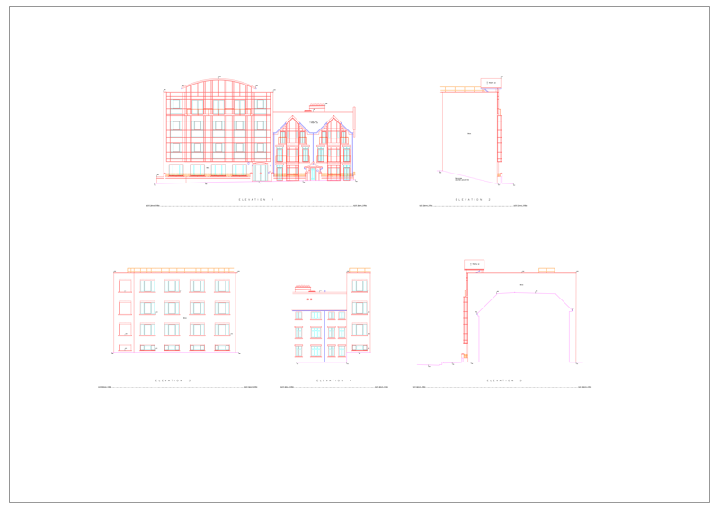
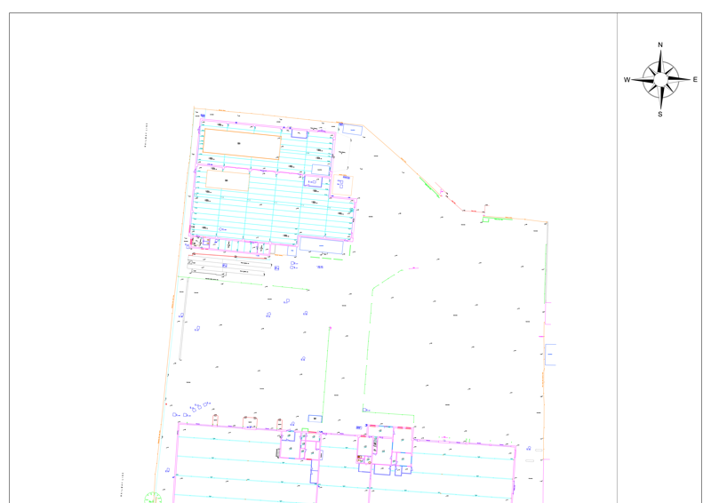

Services
What We Offer
JOD Surveys is a newfound measured Land and Building survey company enabling clients to access reliable, accurate and on time surveys for residential and commercial properties of small and large scales.
Building Surveys
Using the latest 3D laser scanning technology, JOD Surveys is able to capture and measure data from any environment in plan and elevation to create 2D plan work that is fast, accurate and reliable.
JOD Surveys can provide any type of plan work, elevational drawings and sections in differing levels of details to meets the client’s specification. Please see the portfolio for examples of previous projects.
Topographical Surveys
JOD Surveys specialises in topographical surveys with experience operatives who take pride in their abilities to pay rigorous attention to detail.
Every project is different in scale therefore a fresh perspective is taken on each venture to identify a true depiction of a site. Our aim is to clearly and accurately identify boundaries, level grids, building lines, services, soft and hard detail with descriptions and most importantly meet any additional needs of the client.
Deformation Monitoring

JOD Surveys offers a basic deformation monitoring package. Using static offsite control and periodic site visits, the movement of any monitoring target on a building can be tracked.
Eastings, Northings and Levels are recorded and sent to the end user in a simplistic Excel spreadsheet to signify and recognise any movement. (Accurate to 2mm).